En este manual, vamos a ver cómo se crea un Deep Zoom, para poder enlazarlo posteriormente como contenido adicional de nuestras ediciones digitales. Su enlace al libro es objeto de otro manual específico:
Se denomina Deep Zoom (también denominado dz) a una imagen concreta del libro que se pretende resaltar por diversos motivos. Esta imagen será extraída del libro, y tras varios procesos de edición permitirá al usuario final que, al hacer clic sobre la imagen, esta se muestre en pantalla completa a mayor tamaño y de forma individual al resto del contenido de la página a la que pertenece. Además, los dz pueden contener información adicional que no tenía la imagen original, o bien mostrar los mismos de forma interactiva:
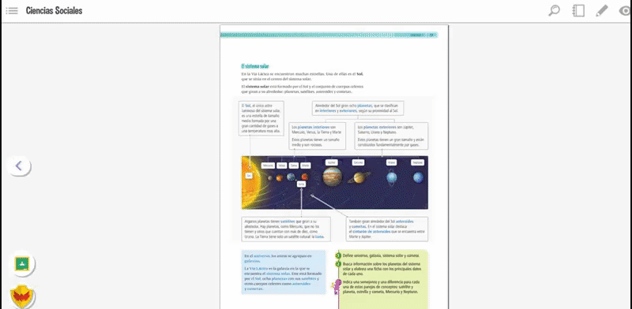Por tanto, vamos a explicar las fases de edición para conseguir generar un dz.
Desde editorial, se nos indicará el listado las imágenes de cada página que deben convertirse en dz. Además, deberán proporcionarnos la mismas en formato editable mediante Photoshop (en adelante PS) y con tamaño y calidad suficiente para mostrarse a pantalla completa.
Desde editorial, se nos indicará el listado las imágenes de cada página que deben convertirse en dz. Además, deberán proporcionarnos la mismas en formato editable mediante Photoshop (en adelante PS) y con tamaño y calidad suficiente para mostrarse a pantalla completa.
Las dimensiones indicadas son algo aproximado, una orientación inicial, ya que la infinidad de proporciones diferentes que pueden tener las imágenes nos obligará en ciertas ocasiones a rehacer el proceso hasta dar con el tamaño más adecuado. Esto suele pasar en aquellas imágenes que son “muy alargadas” tanto horizontales como verticales.
Para redimensionarlas, utilizaremos las opciones que proporciona el PS:
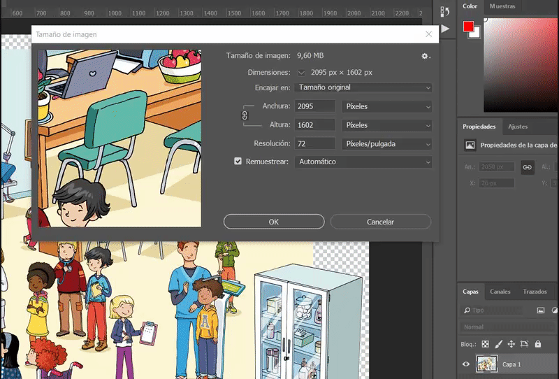Una vez redimensionada se exporta para web en PNG-24 con transparencia y sin halo:
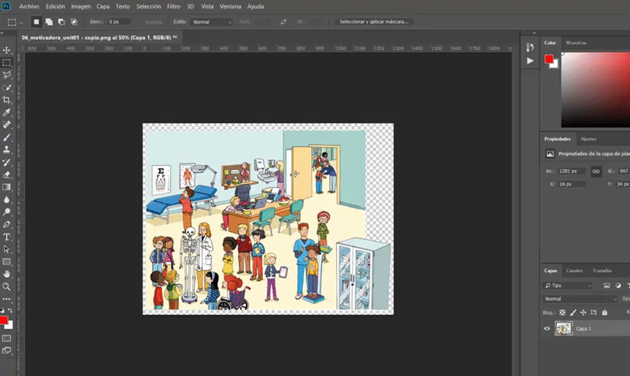Con la imagen redimensionada menú Archivo/Exportar/Zoomify:
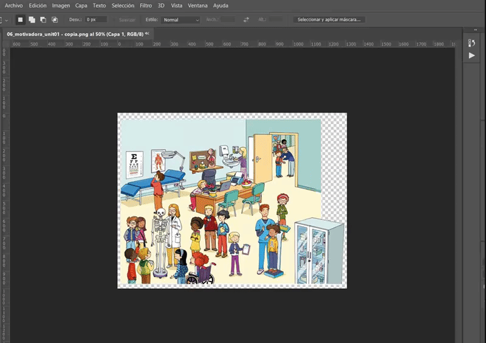Damos ruta de la carpeta de destino (debe ser una carpeta de trabajo, fuera del repositorio del libro en el que estemos trabajando), nombre fácilmente identificable y mantenemos el resto de las opciones como muestra la siguiente captura:
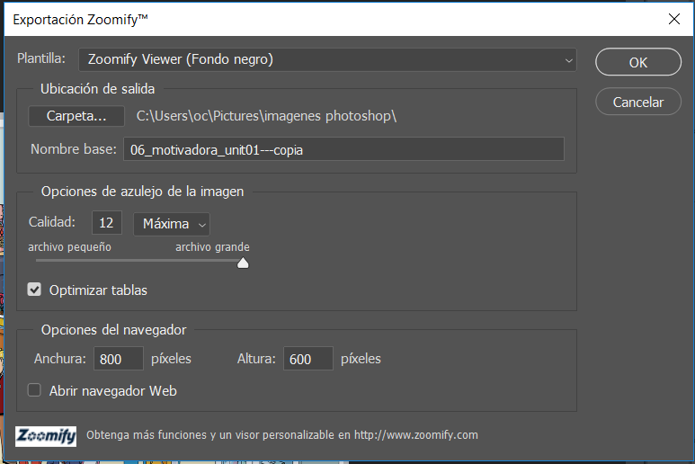Pulsamos ok y esperamos que PS realice el trabajo:
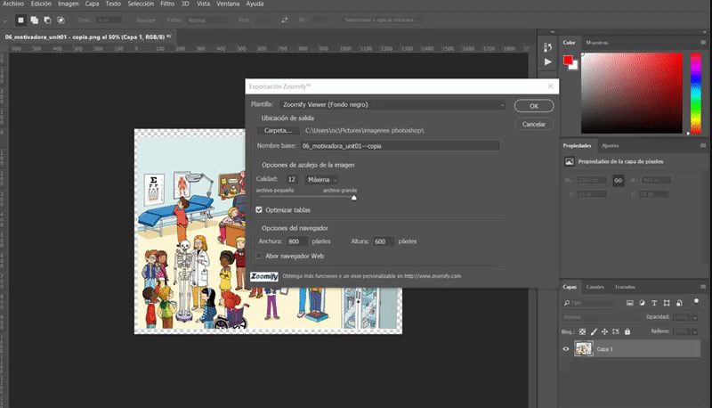En la carpeta indicada se nos habrá creado lo siguiente:
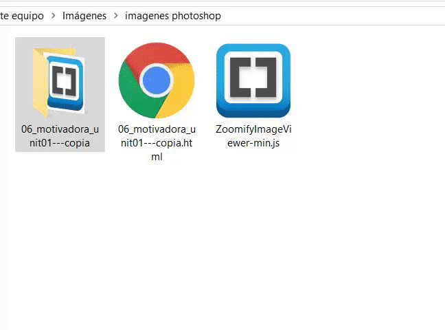Copiamos la carpeta denominada con el nombre que habíamos introducido en el proceso de Zoomify y la llevamos al repositorio del libro en el que estemos trabajando dentro de la carpeta DEEPZOOM. Los otros dos archivos no deben ser copiados (en el ejemplo: 06_motivadora_unit01---copia.html y ZoomifyImageViewer-min.js):
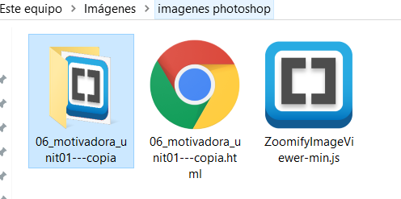 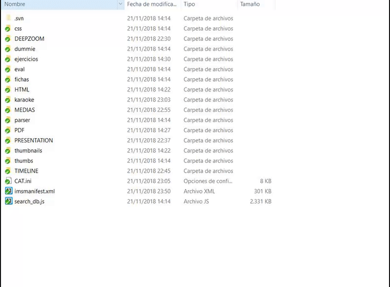Procedemos al renombrado correcto de la carpeta que acabamos de copiar en nuestro repositorio según el siguiente criterio (U01_019_01):
Una vez renombrado comiteamos en el repositorio.
Todos estos pasos, habrá que realizarlos con cada una de las imágenes que se nos haya solicitado (y proporcionado) desde editorial para generar como dz.
El proceso se puede automatizar, para ello recomiendo:
Es evidente que, si automatizamos los procesos, cada vez que pulsemos una opción, tanto el PS como el comit, tardarán algún tiempo (dependiendo del número de imágenes que estemos transformando y subiendo), pero el automatismo genera una gran ganancia de tiempo, dado que ni tenemos que hacerlo una a una, y mientras los programas están trabajando, podemos dedicarnos a realizar otra tarea en un programa diferente.
Una vez que tenemos todas nuestras carpetas de dz comiteadas en el repositorio, tenemos que acceder al CAT.
Para poder logarse en el CAT es necesario disponer de:


Para acceder a la herramienta del Cat que nos ayudará a terminar de generar los dz, denominada DeepZoom Editor pulsamos el siguiente icono:
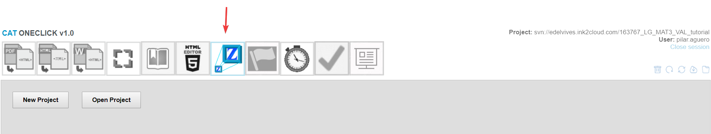Pulsamos New Project, tecleamos el nombre del dz que vamos a editar, en nuestro ejemplo U01_019_01, seleccionamos la carpeta (ojo debe ser el mismo código):
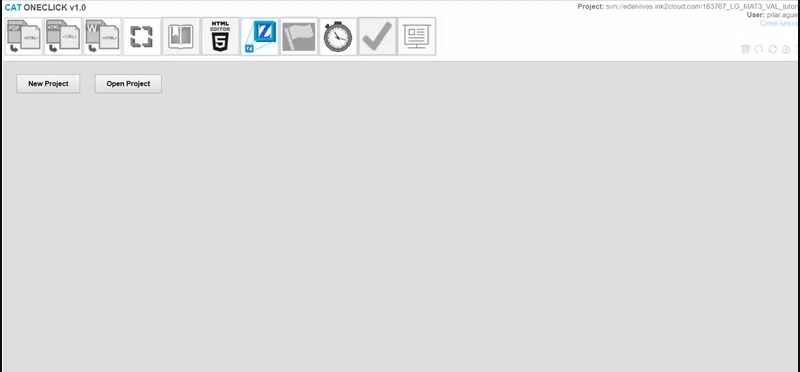y se nos abre nuestra imagen para ser editada:
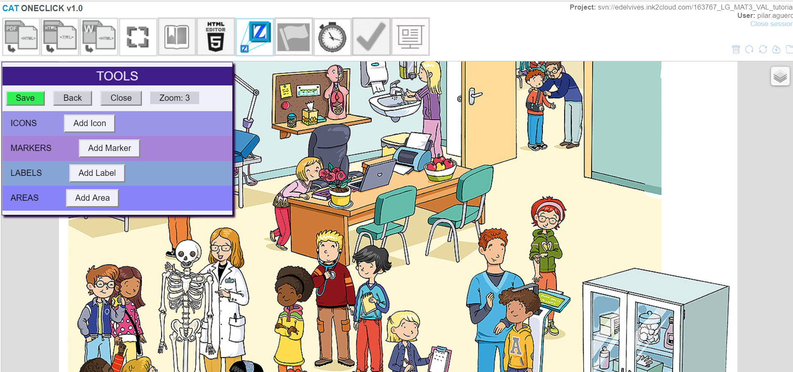En el caso de que fuera un dz simplemente de imagen, daríamos a Save en la botonera de TOOLS y detrás Close, que nos llevará de nuevo a la pantalla principal del DeepZoom Editor.
En este momento, nuestro dz ya estaría listo para poder enlazarse en el libro.
Realizaríamos esta misma operación con todos y cada unos de los dz que hemos preparado con el PS y comiteado en el repositorio.
Previamente tendremos que realizar el paso anterior, es decir, inicialmente se pueden generar todos los dz como sencillos y posteriormente editamos los que sean necesarios.
Para ello, puesto que el dz ya ha sido creado, al volver a la pantalla principal del DeepZoom Editor, pulsaremos “Open Project”
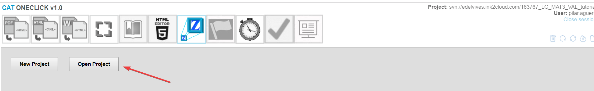Seleccionamos el dz a editar en nuestro ejemplo U01_019_01:
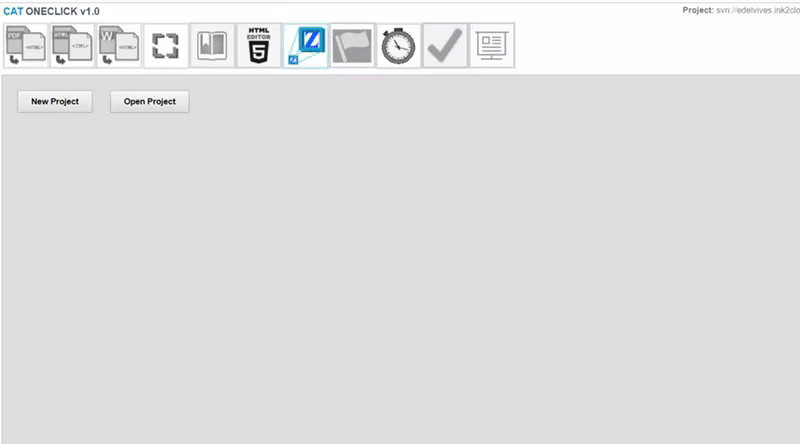Desde el panel de herramientas TOOLS se pueden realizar múltiples opciones, sin embargo, nos vamos a centrar en el caso más habitual, que es que vayan apareciendo contenidos (ya sean títulos o pequeños textos) a medida que pulsamos en los puntos que marquemos en la imagen mediante un icono preestablecido en la herramienta.
Este tipo de dz se hacen utilizando la opción MARKERS pulsando el botón Add marker.
Nada mas pulsarlo, nos aparecerá el icono en la parte central, tan solo tenemos que arrastrarlo al lugar deseado de la imagen:
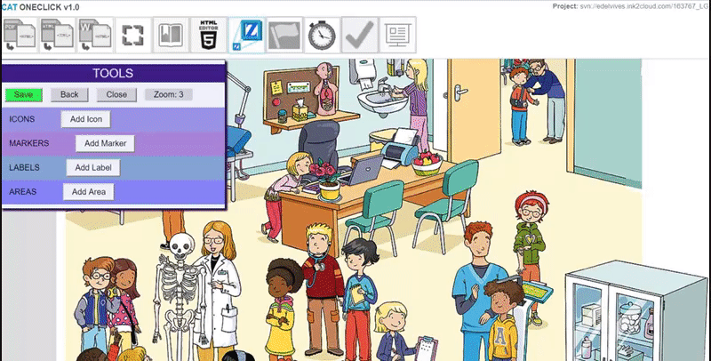En el campo Action por defecto aparece None, debemos seleccionar Popup:
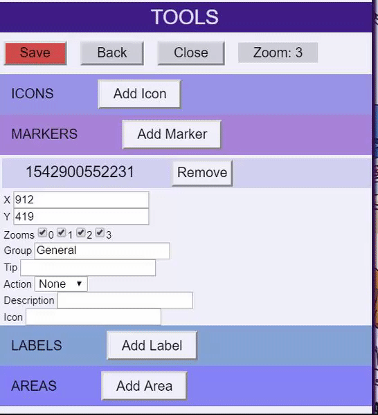En el campo Description debemos introducir el texto que debe aparecer al hacer clic sobre el icono. Se nos abre un editor de texto en el que podremos introducirlo:
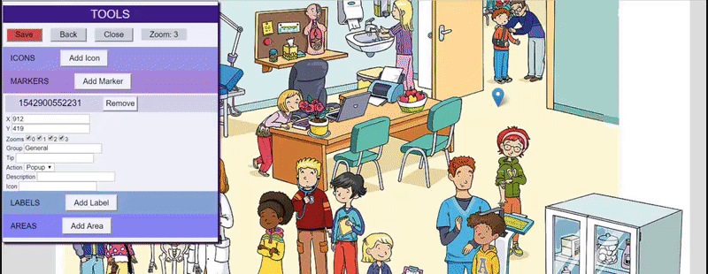Podemos introducir tantos markers sean necesarios para obtener el resultado deseado, simplemente pulsando de nuevo Add Marker y comprobar desde la imagen que muestra todos y cada uno de ellos:
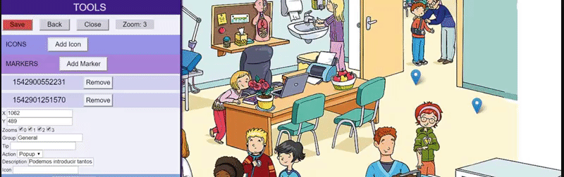Una vez terminados concluidos todos los markers, se pulsa save (permanece rojo mientras haya cambios sin guardar) y después close. Nuestro dz interactivo estaría listo para enlazar:
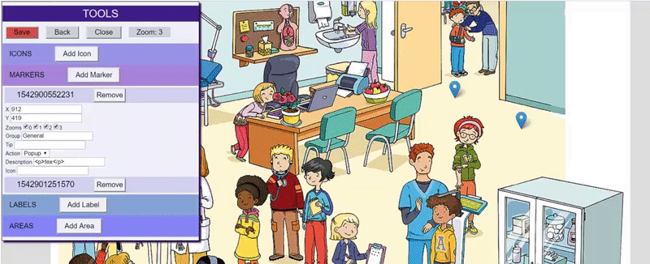Repetimos la operación con todos los dz de este tipo que haya en el proyecto que estamos trabajando.
Como ya indicamos al inicio del manual, el tamaño de las imágenes de origen y sus proporciones influyen mucho en el resultado final. Por tanto, es buena práctica de trabajo el realizar todos los dz como sencillos, enlazarlos y comprobar su aspecto real en la plataforma.
En ocasiones, puede ser necesario ampliar o reducir la imagen, lo que nos obligará a realizar todo el proceso en ese determinado dz.
Por tanto, es conveniente comprobar todos los dz (uno a uno) en su fase de sencillo, y una vez el resultado sea optimo, proceder a hacerlos interactivos.